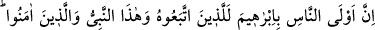

67. İbrâhîm, ne yahûdî, ne de hıristiyan idi; fakat o, Allah’ı bir tanıyan dosdoğru
bir müslüman idi; müşriklerden de değildi.
“İbrâhîm ne yahûdî, ne de hıristiyandı.” Bu ifade biraz önce geçen delîlin anlattığı
mefhumu sarâhaten göstermektedir. “Fakat o bir hanif (Allah’ı bir tanıyan) dosdoğru
bir müslüman idi.” Bütün bâtıl îtikadlardan yüz çevirmişti. Allah’a boyun eğmişti. Bu
ifadeden maksat, Hz. İbrâhîm’in İslâm dîninden olduğu değildir. Aksi takdirde yahûdî
ve hıristiyanların ilzâm edildiğine İslâm’da iştirak etmiş olurdu. “O, müşriklerden de
değildi.” Âyetin bu kısmı, hem yahûdîlere hem de hıristiyanlara târizde bulunmaktadır.
Çünkü “Uzeyr Allah’ın oğludur.” “Mesîh, Allah’ın oğludur” demektedirler. Âyet
ayrıca müşriklerin Hz. İbrâhîm’in dîni üzere olma iddiâlarını da reddetmektedir.
Kendisinin İbrâhîm’in dîni üzere olduğu iddiâsında bulunmaya en müstehak olan,
kendi zamanında ona uyanlar, Allah’a ve Muhammed’e inanan mü’minlerdir. Çünkü
şerîatları, onun şerîatına büyük ölçüde uymaktadır. Allah mü’minlerin dostu,
yardımcısıdır. Îmânları sebebiyle onları mükâfatlandıracaktır.
68. İnsanların İbrâhîm’e en yakın olanı, ona uyanlar, şu Peygamber (Muhammed)
ve (ona) îman edenlerdir. Allah mü’minlerin dostudur.
“İnsanların İbrâhîm’e yakın olanı” Kendisinin Hz. İbrahim dininden olduğu
iddiâsında en haklı olanı Hz. İbrahim devrinde “ona uyanlar, şu peygamber”
Muhammed Mustafa (s.a.) - Çünkü o da İbrahim’e uymaktadır - ve bu ümmetten Allah’a
ve “Hz. Muhammed’e îman edenlerdir.” Çünkü Hz. İbrahim’in koyduğu aslî kurallarda
ona muvâfakat etmektedirler. “Allah da mü’minlerin dostudur.” Îmânları sebebiyle
onlara yardım eder ve onları cennet ile mükâfatlandırır.
69. Ehl-i kitaptan bir kısmı istediler ki, ne yapıp edip sizi saptırabilsinler. Oysa
onlar sadece kendilerini saptırırlar da farkına bile varmazlar.
Kitap ehlinden bir grup istedi ki, İslâm dîninden, kâfirliğe çevirsinler. Burada “bir
grup” denmiştir, çünkü kitap ehlinden bir başka grup da gece saatlerinde, Allah’ın
âyetlerini okurlardı. “Oysa sadece kendilerini saptırıyorlar.” Bu cümle, müslüman
muhatapların, uydukları dosdoğru din üzere yaşamaya devam edeceklerini göstermek